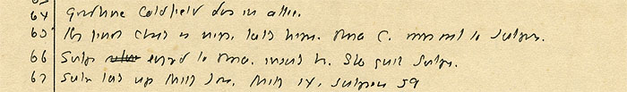

64: Goodhue Coldfield dies in attic.
65: Henry finds Charles is negro, kills him. Rosa C. moves out to Sutpens.
66: Sutpen [cancelled: returns] engaged to Rosa, insults her. She quits Sutpens.
67: Sutpen takes up Milly Jones. Milly 14, Sutpen 59
THE CLIFTON WALLER BARRETT COLLECTION |
UNIVERSITY OF VIRGINIA